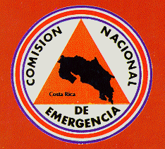
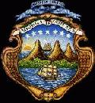

<!DOCTYPE HTML PUBLIC "-//IETF//DTD HTML//EN">
<html>

<head>
<meta http-equiv="Content-Type" content="text/html; iso-8859-1">
<title>666</title>
</head>

<frameset cols="3%,97%">
  <frame src="frcont01.htm" name="contents" marginwidth="1" marginheight="1" target="main">
  <frame src="frmain01.htm" name="main" marginwidth="1" marginheight="1" scrolling="auto">
  <noframes>
  <body stylesrc="entrada.htm" background="Gray_Textured171.gif" bgcolor="#FFFFFF">
  <!--webbot bot="Include" tag="BODY" u-include="entrada.htm" startspan -->
<div align="center"><center>

<table border="0">
    <tr>
        <td align="center"><font size="2"></font></td>
        <td align="center">&nbsp;</td>
        <td>&nbsp;</td>
        <td align="center"><a name="REPUBLICA DE COSTA RICA"><font size="4"><em><strong>REPUBLICA DE COSTA RICA</strong></em></font></a><font size="4"><em><strong><br>
        </strong></em></font><font color="#008040" size="4"><em><strong>Comisión
        Nacional de Emergencias<br>
        </strong></em></font><font color="#FF00FF" size="4"><em><strong>Enlace
        de Esfuerzos</strong></em></font><font color="#0000FF" size="4"><em><strong><br>
        </strong></em></font><font size="4" face="MS Dialog Light"><em><strong>Costa Rica<br>
        América Central</strong></em></font></td>
        <td align="center">&nbsp;</td>
        <td>&nbsp;</td>
        <td align="center"><font size="2"></font></td>
    </tr>
</table>
</center></div>

<p align="center"><font color="#0000FF" size="6" face="Rockwell Extra Bold"><em><strong>Bienvenidos </strong></em></font></p>
<div align="center"><center>

<table border="2" bgcolor="#FFFF00">
    <tr>
        <td colspan="2"><p align="center"><font size="4" face="Viner Hand ITC"><em><strong>MENU PRINCIPAL</strong></em></font></p>
        </td>
    </tr>
    <tr>
        <td><a href="#ORGANIZACION Y NORMATIVA"><font color="#0000FF" size="2"><em><strong>ORGANIZACION Y NORMATIVA</strong></em></font></a></td>
        <td><a href="#INFORMACION ACTUAL"><font color="#0000FF" size="2"><em><strong></strong></em></font><font color="#FF0000" size="2"><em><strong>INFORMACION ACTUAL</strong></em></font></a></td>
    </tr>
    <tr>
        <td><a href="#INFORMACION GENERAL Y CONSULTAS"><font color="#0000FF" size="2"><em><strong>INFORMACION GENERAL Y CONSULTAS</strong></em></font></a></td>
        <td><a href="#SITIOS RELACIONADOS CON EMERGENCIAS"><font color="#0000FF" size="2"><em><strong>SITIOS RELACIONADOS CON EMERGENCIAS</strong></em></font></a></td>
    </tr>
    <tr>
        <td><a href="#BUSQUEDAS"><font color="#0000FF" size="2"><em><strong>BUSQUEDAS</strong></em></font></a></td>
        <td><a href="#ACTUALIZE SU NAVEGADOR"><font color="#0000FF" size="2"><em><strong>ACTUALIZE SU NAVEGADOR</strong></em></font></a></td>
    </tr>
</table>
</center></div>

<p align="center"><em><strong><blink> </blink></strong></em><font color="#FF0080"><em><strong><blink>ESTAMOS EN CONSTRUCCION <br>
</blink></strong></em></font><a href="comentar.htm"><font color="#0000FF"><em>SUS COMENTARIOS</em></font></a></p>

<p>&nbsp;</p>

<hr>

<p align="center"><a name="ORGANIZACION Y NORMATIVA"><font color="#0000FF" size="6" face="Tempus Sans ITC"><em><strong>ORGANIZACION
Y NORMATIVA</strong></em></font></a></p>

<p align="center"><a href="sobrela.htm"><font size="5">Sobre la
C. N. E.<br>
</font></a><a href="estructu.htm"><font size="5">Organización<br>
</font></a><a href="comits.htm"><font size="5">Comités Asesores
Técnicos<br>
</font></a><a href="comites.htm"><font size="5">Comités de
Emergencia<br>
</font></a><a href="ley.htm"><font size="5">Leyes y Reglamentos
de Emergencia</font></a><font size="5"><br>
</font><a href="red.htm"><font size="5">Red Nacional de
Comunicaciones</font></a><font size="5"><br>
</font><a href="sie.htm"><font size="5">Sistema Integrado de
Información para Emergencias<br>
</font></a></p>

<p>&nbsp;</p>

<p align="center"><a href="#REPUBLICA DE COSTA RICA"></a></p>

<hr>

<p>&nbsp;</p>

<p align="center"><a name="INFORMACION ACTUAL"><font color="#FF0000" size="6" face="Tempus Sans ITC"><em><strong>INFORMACION
ACTUAL</strong></em></font></a></p>

<p align="center"><a href="ultimos.htm"><font color="#FFFFFF" size="5"><em><strong><blink>Emergencias en Costa Rica<br>
</blink></strong></em></font></a><a href="sumario.htm"><font size="5">Sumario Mensual de Emergencias</font></a><font size="5"><br>
</font><a href="http://wxp.atms.purdue.edu/maps/satellite/sat_ir_east.gif"><font size="5">Imagen Satelital del Día</font></a></p>

<p>&nbsp;</p>

<p>&nbsp;</p>

<p align="center"><a href="#REPUBLICA DE COSTA RICA"></a></p>

<p>&nbsp;</p>

<hr>

<p align="center"><a name="INFORMACION GENERAL Y CONSULTAS"><font color="#0000FF" size="6" face="Tempus Sans ITC"><em><strong>INFORMACION
GENERAL Y CONSULTAS</strong></em></font></a></p>

<p align="center"><a href="atlasde.htm"><font size="5">Atlas de
Amenazas Naturales</font></a><font size="5"><br>
</font><a href="matpel1.htm"><font size="5">Amenazas
Tecnológicas</font></a><font size="5"><br>
</font><a href="desastre.htm"><font size="5">Historia de los
Desastres en Costa Rica</font></a><font size="5"><br>
</font><a href="material.htm"><font size="5">Material Divulgativo</font></a><font size="5"><br>
</font><a href="centrode.htm"><font size="5">Centro de
Documentación para Desastres</font></a><font size="5"><br>
</font><a href="modulos.htm"><font color="#0000FF" size="5">Módulos
de Capacitación en Desastres</font></a><font color="#0000FF" size="5"><br>
</font><a href="programa.htm"><font size="5">Programa Educativo
para Emergencias<br>
</font></a><a href="activida.htm"><font size="5">Agenda de
Actividades Técnico Científicas<br>
</font></a><a href="enos.htm"><font size="5">Fenómeno El Niño</font></a><font size="5"><br>
</font><a href="genero.htm"><font size="5">Género y Desastres</font></a><font size="5"><br>
</font><a href="servicio.htm"><font color="#0000FF" size="5">Solicitudes
en Línea<em><br>
</em></font></a></p>

<p>&nbsp;</p>

<p>&nbsp;</p>

<p align="center"><a href="#REPUBLICA DE COSTA RICA"></a></p>

<p>&nbsp;</p>

<p>&nbsp;</p>

<p>&nbsp;</p>

<hr>

<p align="center"><a name="SITIOS RELACIONADOS CON EMERGENCIAS"><font color="#0000FF" size="6" face="Tempus Sans ITC"><em><strong>SITIOS
RELACIONADOS CON EMERGENCIAS</strong></em></font></a></p>

<p align="center"><a href="http://www.tc.gc.ca/canutec"><font color="#0000FF" size="5">Base de datos de Manejo y Transporte de
Sustancias Peligrosas</font></a><font color="#0000FF" size="5"><br>
</font><a href="http://www.netsalud.sa.cr/ops/suma"><font color="#0000FF" size="5">Sistema de Manejo de Sumistros
(S.U.M.A.)</font></a><font color="#0000FF" size="5"><br>
</font><a href="sitios.htm"><font color="#0000FF" size="5"><em>Otros
Sitios de Interes<br>
</em></font></a></p>

<p>&nbsp;</p>

<p>&nbsp;</p>

<p>&nbsp;</p>

<p>&nbsp;</p>

<p align="center"><a href="#REPUBLICA DE COSTA RICA"></a></p>

<p align="center">&nbsp;</p>

<hr>

<p align="center"><a name="ACTUALIZE SU NAVEGADOR"><font color="#0000FF" size="6" face="Tempus Sans ITC"><em><strong>ACTUALIZE
SU NAVEGADOR</strong></em></font></a></p>

<p align="center"><font size="5"></font></p>

<p align="center"><a href="http://www.microsoft.com/ie/download/"><font size="5"></font></a></p>

<p>&nbsp;</p>

<p>&nbsp;</p>

<p>&nbsp;</p>

<p>&nbsp;</p>

<p align="center"><a href="#REPUBLICA DE COSTA RICA"></a></p>

<p>&nbsp;</p>

<hr>

<p align="center">&nbsp;</p>

<p align="center"><a name="BUSQUEDAS"><font color="#0000FF" size="6"><em><strong>BUSQUEDAS</strong></em></font></a></p>

<p align="center">&nbsp;</p>

<p align="center"><a href="buscar1.htm"><font size="5"><em>En
Nuestro Sitio</em></font></a></p>

<p align="center"><font size="5"><em>En Yahoo</em></font></p>

<p align="center"><font size="3"><strong><!-- Begin Yahoo Search Form --> </strong></font></p>

<form action="http://search.yahoo.com/bin/search" method="GET" name="f1">
    <p align="center"><font size="3"><strong><input type="text" size="22" name="p"><br>
    <input type="submit" name="name" value="Inicia Busqueda"> </strong></font><a href="http://www.yahoo.com/search.html"></a><font size="3"><strong>
    </strong></font></p>
</form>
<font size="3"><strong><!-- End Yahoo Search Form --></strong></font>

<p align="center"><font size="1"><strong><br>
</strong></font><a href="#REPUBLICA DE COSTA RICA"></a></p>
<!--webbot bot="Include" endspan i-checksum="36290" -->

  </body>
  </noframes>
</frameset>
</html>
